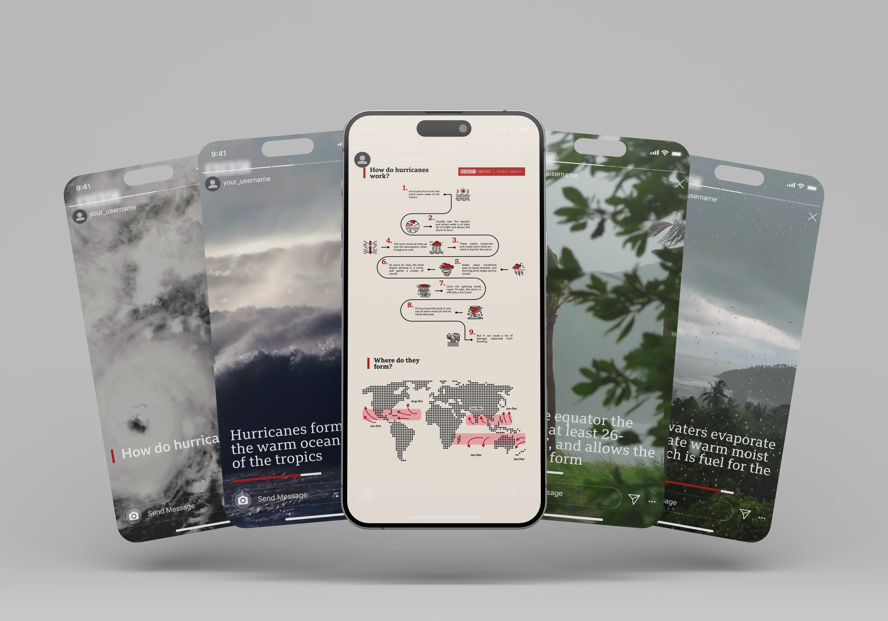
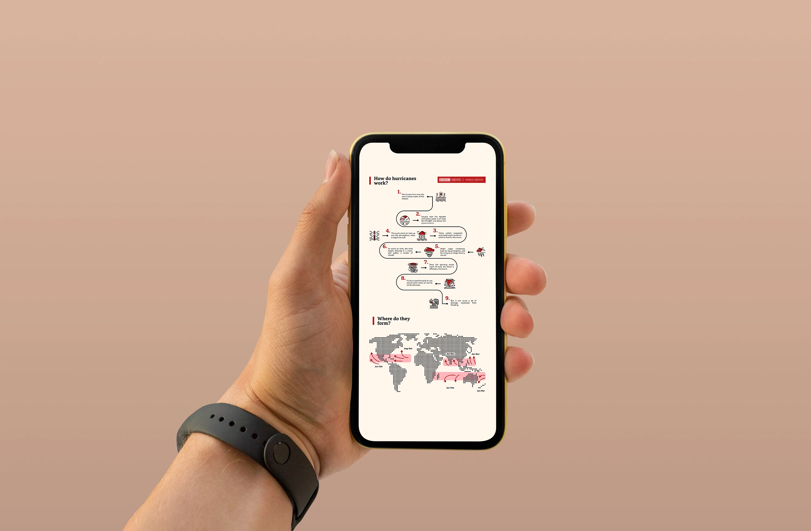
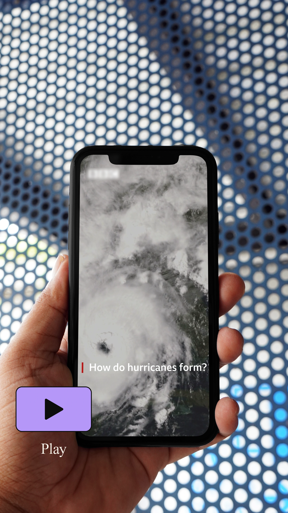

INTRO
The project, designed for a leading global broadcaster, aimed to create educational visual content that would clearly and concisely explain how hurricanes form. The project consisted of two elements: a detailed infographic and a video reel for social media, tailored for a broad audience to facilitate the understanding of a complex phenomenon. Maintaining a professional visual style in line with the brand’s guidelines was essential to ensure consistency and clear communication.
The project, designed for a leading global broadcaster, aimed to create educational visual content that would clearly and concisely explain how hurricanes form. The project consisted of two elements: a detailed infographic and a video reel for social media, tailored for a broad audience to facilitate the understanding of a complex phenomenon. Maintaining a professional visual style in line with the brand’s guidelines was essential to ensure consistency and clear communication.

THE CHALLENGE
The project posed several technical and communication challenges. The first involved the need to gather and condense scientific information accurately and translate it into a visual layout that would be clear and immediate. Another critical aspect was making complex concepts understandable to a broad audience while adhering to the network’s style guidelines. Finally, the design had to achieve a visual balance between the map, icons, and text without appearing overloaded.
The project posed several technical and communication challenges. The first involved the need to gather and condense scientific information accurately and translate it into a visual layout that would be clear and immediate. Another critical aspect was making complex concepts understandable to a broad audience while adhering to the network’s style guidelines. Finally, the design had to achieve a visual balance between the map, icons, and text without appearing overloaded.

THE SOLUTION
The infographic content was divided into 9 key concepts, selected following an in-depth phase of research and synthesis. Each concept was represented by a dedicated icon with bright colours to emphasise the most important points. A minimalist style was adopted, based on a neat grid, integrating a world map to provide geographical context. The Instagram video reel followed the same visual scheme as the infographic, maintaining consistency with colours and icons, but enhancing each point with short video clips and background music to reinforce the narrative and improve understanding.
The infographic content was divided into 9 key concepts, selected following an in-depth phase of research and synthesis. Each concept was represented by a dedicated icon with bright colours to emphasise the most important points. A minimalist style was adopted, based on a neat grid, integrating a world map to provide geographical context. The Instagram video reel followed the same visual scheme as the infographic, maintaining consistency with colours and icons, but enhancing each point with short video clips and background music to reinforce the narrative and improve understanding.
RESULT
The project successfully achieved the goal of explaining the hurricane formation process in a clear and visually engaging manner. Both the infographic and the reel presented the 9 key concepts in an accessible way, respecting the visual guidelines and maintaining a graphic quality appropriate to the brand’s standards. The coherence between the infographic and the reel strengthened the overall communication impact, creating content suitable for both educational contexts and social media use, enhancing audience interest and understanding of a complex topic.
The project successfully achieved the goal of explaining the hurricane formation process in a clear and visually engaging manner. Both the infographic and the reel presented the 9 key concepts in an accessible way, respecting the visual guidelines and maintaining a graphic quality appropriate to the brand’s standards. The coherence between the infographic and the reel strengthened the overall communication impact, creating content suitable for both educational contexts and social media use, enhancing audience interest and understanding of a complex topic.
